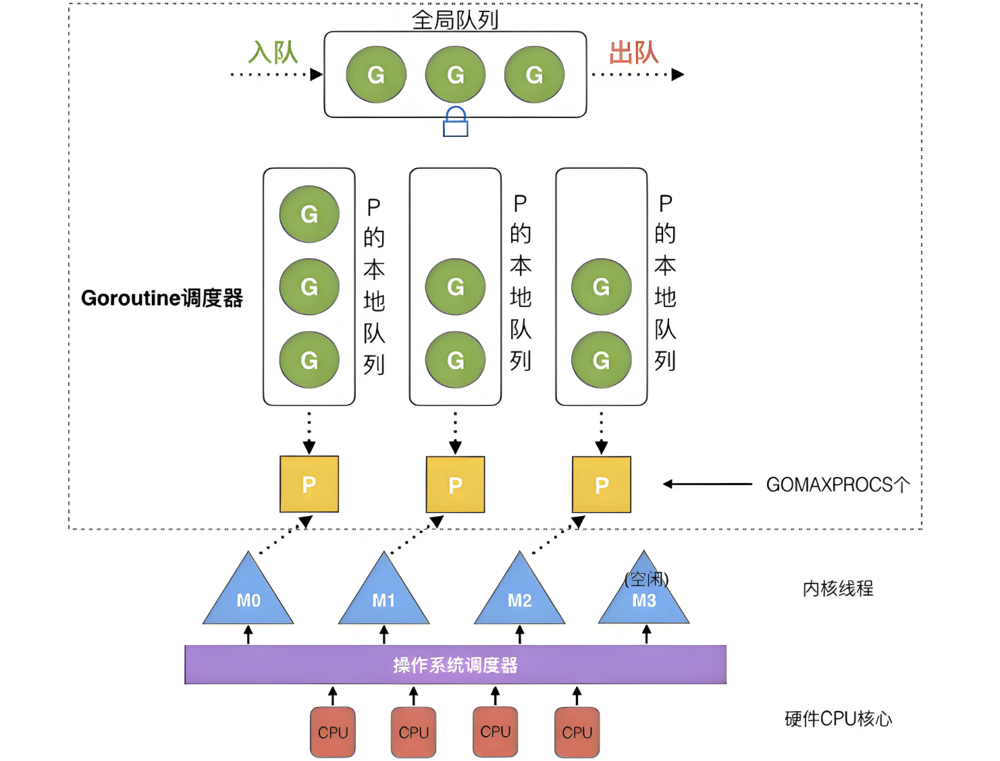

Ch05-GoLang 之 GMP
October 18, 2024
在Go中，线程是运行goroutine的实体，调度器的功能是把可运行的goroutine分配到工作线程上。

- 全局队列（Global Queue）：存放等待运行的G。
- P的本地队列：同全局队列类似，存放的也是等待运行的G，存的数量有限，不超过256个。新建G’时，G’优先加入到P的本地队列，如果队列满了，则会把本地队列中一半的G移动到全局队列。
- P列表：所有的P都在程序启动时创建，并保存在数组中，最多有GOMAXPROCS(可配置)个。
- M：线程想运行任务就得获取P，从P的本地队列获取G，P队列为空时，M也会尝试从全局队列拿一批G放到P的本地队列，或从其他P的本地队列偷一半放到自己P的本地队列。M运行G，G执行之后，M会从P获取下一个G，不断重复下去。
P的数量 由启动时环境变量
$GOMAXPROCS或者是由runtime的方法GOMAXPROCS()决定。这意味着在程序执行的任意时刻都只有$GOMAXPROCS个goroutine在同时运行M的数量 go语言本身的限制：go程序启动时，会设置M的最大数量，默认10000。但是内核很难支持这么多的线程数，所以这个限制可以忽略
runtime/debug中的SetMaxThreads函数，设置M的最大数量 一个M阻塞了，会创建新的MP和M何时会被创建 关于P：在确定了P的最大数量n后，运行时系统会根据这个数量创建n个P。 关于M：没有足够的M来关联P并运行其中的可运行的G。比如所有的M此时都阻塞住了，而P中还有很多就绪任务，就会去寻找空闲的M，而没有空闲的，就会去创建新的M
参考文献 #
python 有两个线程池，线程池 A执行短耗时的任务，线程池 B 执行长耗时的任务。当线程 T 在线程池 A 中执行超过 3s 时，将其调度到线程池 B 中继续执行。线程 T 在迁移过程中不能终止